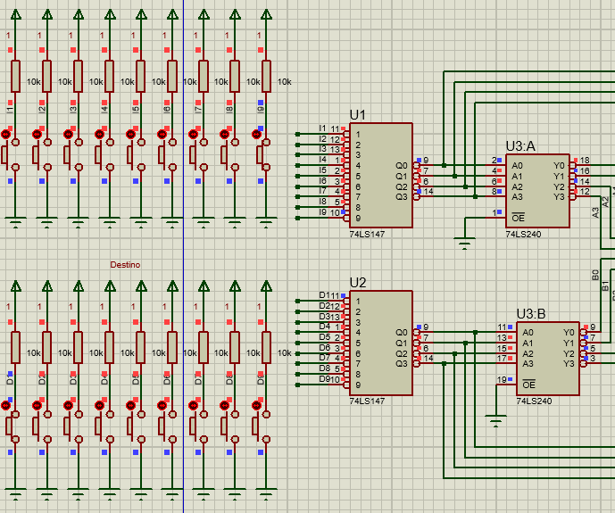
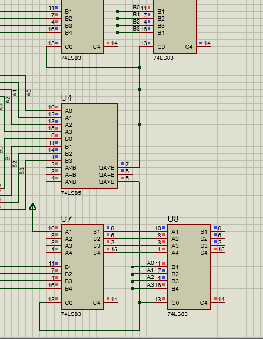
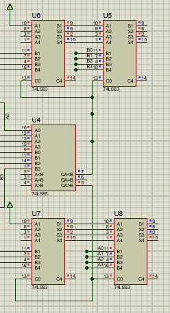
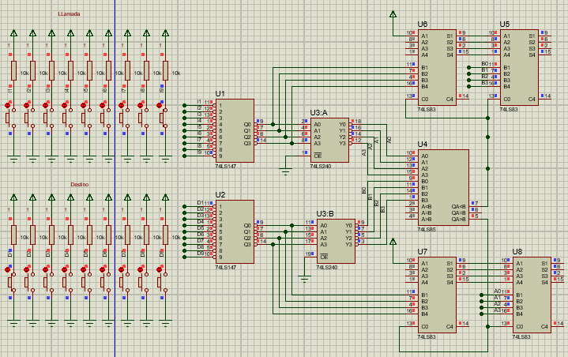

Un sistema de driver para elevador el cual indica cuantos pisos se quiere subir o bajar, y si se quiere subir o bajar, el proposito es poder tomar esos datos y convertirlo a un sistema de control para algun actuador como un motor a pasos por ejemplo.
El CI 74LS147 es el encargado de codificar de "decimal" a binario, el numero decimal se toma del sistema de botones que tiene por dentro el elevador el cual sirve para ver a que nivel quiere ir, tambien se usa para ver desde que nivel se esta llamando el elevador, el sistema de botones esta usando el modo pull up ya que el CI es de logica negativa, el CI 74LS240 es usado para negar la salida del codificador.
El integrado 74LS85 sirve para comparar si es mayor el nivel al que se quiere ir o menor esto es importante ya que determina si se quiere subir o bajar.
Para realizar la resta se hace el complemento a 2 del numero que quiere restar eso sirve para ver cuantos pisos se quiere subir o bajar, por eso es que se quiere ver de que forma hacer la resta, el cual es la tarea encargada por el comparador.
Esquema completo
